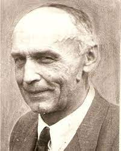

Jan Drożdż:

Inż. Jan Drożdż urodził się 23 grudnia 1895 r. w Jodłowniku k/ Limanowej, jako syn gospodarza Andrzeja i matki Magdaleny z d. Matejkiewicz. J. Drożdż był najstarszym synem w rodzinie liczącej 10- ro dzieci, w której mimo trudnych warunków materialnych panowała atmosfera serdeczności i wzajemnej życzliwości. Wychowywany był przez rodziców pobożnych. W swoim młodzieńczym pamiętniku wspomina swego stryja ks. Jana Drożdża proboszcza w Łączkach Kucharskich, gdzie jeździł na wakacje, o których pisze… „ spędzałem tam najmilsze chwile w mym życiu, w swej dziecięcej wierze”. Do szkoły podstawowej uczęszczał do Szczerzyca. Szkoła prowadzona była przez OO Cystersów. Naukę w gimnazjum kontynuował do piątej klasy w Bochni, a następnie w III Gimnazjum im. Sobieskiego w Krakowie. Powodem przeniesienia się z Bochni do Krakowa był fakt, że właściciel majątku w Jodłowniku, p. Romer wziął J. Drożdża za korepetytora dla swego syna, uczęszczającego do tej samej klasy. Ósmą klasę gimnazjalną zakończył egzaminem dojrzałości, który zdał z odznaczeniem. Wszystkie okresowe świadectwa gimnazjalne zaopatrzone były uwagą „ ukończył klasę z wynikiem chlubnym”. O swoim życiu tak dalej pisze w swoim pamiętniku…” po zdaniu matury wyjechałem na wakacje do domu. Tam zaskoczyła mnie wojna. Obowiązek młodzieńca polskiego, a może i entuzjazm, pociągnął mnie do Legionów, w których służyłem od 16 sierpnia 1914 r. do 9 września 1916 r. Pierwszy rok służyłem w 2-giej brygadzie w 3 pp. W 14 kompanii, walcząc na placu boju w Karpatach, gdzie po postrzeleniu w nogę i zapaleniu płuc zabrano mnie do szpitala i odkomenderowano do Komendy placu w Wiedniu. Pełniąc tam służbę skorzystałem z rozporządzenia Ministra Oświaty, które żołnierzom pełniącym lekką służbę zezwalano uczęszczać na wykłady uniwersyteckie i zapisałem się 29 listopada 1915. na „Hochschule fur Bodenkultur ”na Wydział „ Kulturtechnik”. Przez pierwszy i drugi semestr uczęszczałem na wykłady matematyki, chemii, botaniki, fizyki, geodezji, geologii, a 15 lipca 1916r. zdałem „Pierwszy Państwowy Egzamin” z postępem bardzo dobrym, uzyskując prawo do zapisania się na drugi rok studiów”.
Rozkazem Komendy z 1916 r. zostaje ze służby wojskowej w Legionach przeniesiony w stan tzw. „ urlopu stałego”. Musiał więc zrezygnować z bardzo pociągających go studiów. Wraca do domu. Nurtuje go nieustannie myśl o konieczności odbudowy duchowej naszego polskiego narodu. Wie, że musi podjąć decyzję związaną z jego dalszym losem. Ogarnia go osamotnienie. Przyzwyczajony do pokonywania trudności w życiu, postanawia dla lepszego umocnienia i rozeznania swego wnętrza poświęcić swe siły głębszemu poznaniu idei chrześcijaństwa. Zapisuje się na UJ na Wydział Teologiczny. Wchłania wiedzę religijną, ucząc się i zdając dobrze egzaminy. Zdaje sobie jednak coraz bardziej sprawę, że wiedza teoretyczna musi mieć głębokie powiązanie z praktyką życiową. Analizując i obserwując swe życie wewnętrzna niepokoi go fakt, że nie czuje, nie widzi jasno drogi swego powołania. Ogarnia go niepokój i niepewność. Prosi Pana Boga o jaśniejsze rozeznanie. Przypadek chciał, że był zaproszony na końcowy egzamin swej młodszej siostry Marii, która uczęszczała do Szkoły Gospodarczej w Ruszczy pod Krakowem. Podziwiał tam zakres i bogactwo wiadomości przekazywanym dziewczętom z zakresu prowadzenia gospodarstwa domowego. Zauważył, że w szkole tej zwracano uwagę nie tylko na wykształcenie fachowe, ale przede wszystkim na zdrowe wychowanie przestrzegające moralnych zasad. Zachwycił się tym wspaniałym powiązaniem przekazywania fachowej wiedzy z właściwym wychowaniem młodych ludzi. Obudziła się w nim chęć i pragnienie poświęcenia się takiej właśnie pracy. Odkrył sens i drogę swego powołania. Idąc z nią, czuł i wiedział, że spełnia swoje zamierzenia Boże. W swoim pamiętniku pisze…” Chrystus podał mi rękę, a ja uchwyciłem silnie Jego Krzyż”. Po rozeznaniu swego wnętrza i rozmowie ze swoimi światłymi wychowawcami, podejmuje zmianę kierunku studiów. Zapisuje się na Wydział Rolniczy, gdzie jako słuchacz zwyczajny UJ uczęszcza na wszystkie wykłady w latach 1918- 1921. Pierwszy rok studiów zakończony w Wiedniu zostaje mu zaliczony. Wszystkie następne egzaminy zdaje z odznaczeniem. Po ostatnim egzaminie uzyskuje prawo do świadectwa ukończenia pełnego kursu nauk na Studium Rolniczym( Absolutorium) z dnia 26 lipca 1921 r.
W latach 1918-1919 uczęszcza dodatkowo na jednoroczny kurs handlowy przy Akademii Handlowej w Krakowie, który ukończył w 1919 r. podejmując pracę w tejże Akademii u prof. Bollanda. Praca ta pozwoliła mu zdobyć środki materialne na utrzymanie i ukończenie studiów rolniczych.
Po ukończeniu studiów rolniczych pracuje w Małopolskim Towarzystwie Rolniczym jako instruktor rolnictwa i hodowli bydła w Limanowskim Powiecie oraz jako nauczyciel wędrownych i stałych kursów rolniczych. Początkowo mieszka w majątku matki żony Kunegundy Stutorowej, która po śmierci męża stwarza córce oparcie w rodzinnym domu. Żona inż. Drożdża pracowała wówczas jako nauczycielka w pobliskiej wsi Sadek. Maria Drożdżowa od początku małżeństwa po bohatersku wspierała męża na każdym kroku swą pracowitością, energią i dzielnością.
Zdolności organizatorskie, wiedza fachowa, pracowitość inż. Drożdża daja się wnet zauważyć. Władze Wydziału Powiatowego w Limanowej w 1923r. zawierają umowę, na podstawie której inż. J. Drożdż decyduje się na dzierżawę majątku w Łososinie Górnej, traktując ja jako etap przedwstępny do przygotowania tego gospodarstwa dla potrzeb przyszłej szkoły rolniczej. Byłoby to niemożliwe, gdyby znów wielkoduszna matka żony nie pomogła córce i nie ofiarowała jej, tak koniecznego do zagospodarowania majątku w Łososinie, inwentarza żywego (konie, krowy, świnie) oraz inwentarza martwego. Żona inż. J. Drożdża przenosi się do Łososiny wraz z dwójka małych dzieci. W warunkach początkowo bardzo prymitywnych, pod przewodnictwem swego męża, z zapałem i nieprawdopodobną wręcz energią zaczyna prowadzić gospodarstwo w Łososinie, wyciągając go z ruiny i przeobrażając we wzorowe gospodarstwo.
Inż. J. Drożdż pracuje dalej jako instruktor rolnictwa i hodowli, organizując w latach 1921/27 w powiecie limanowskim 57 kółek rolniczych oraz związków hodowlanych.
Pismem Ministerstwa Rolnictwa w 1927r. zostaje przyjęty do szkolnictwa rolniczego, a następnie dla pogłębienia i poznania wymagań w szkolnictwie zostaje skierowany do Szkoły Rolniczej w Zagrobelni, gdzie odbył praktykę nauczycielską. Następnie odbywa praktykę w Państwowej Szkole Mleczarskiej w Rzeszowie.
Ministerstwo Rolnictwa w 1927r. poleca udać się inż. J. Drożdżowi na studia do Czechosłowacji i Szwajcarii. Wyjeżdża do państwowej Specjalnej Szkoły Gospodarczej w Orawskim Podzamczu, a następnie do Krajowej szkoły Gospodarczo – Łąkowej w Rożnowie pod Radhostem na Morawach. Przebywa również w Krajowej Pastewno – Łąkowej Stacji Doświadczalnej w Rożnowie, gdzie pracował przy rozbiorze botanicznym łąkowej roślinności i pracach doświadczalnych na poletkach tamtejszej stacji.
Od 10 do 28 czerwca 1928r. bierze udział w Wędrownym Kursie Gospodarstwa Górskiego w Szwajcarii jako stypendysta Małopolskiego Towarzystwa Rolnego. Kurs ten prowadził wybitny polski specjalista rolnictwa górskiego prof. dr Jan Włodek. Dla inż. J. Drożdża uczestniczenie w tym kursie było nie tylko bezpośrednim stwierdzeniem wysokiego poziomu gospodarstw w Szwajcarii, ale również źródłem cennych obserwacji. Zapoznał się ze szwajcarską metodą uprawiania pastwisk – łąk i hal, z urządzaniem stajni dla bydła, z budową zbiorników gnojowicowych, z prowadzeniem racjonalnych wypasów na łąkach, pastwiskach, z funkcjonowaniem szkół rolniczych i organizacją szwajcarskiego Związku Chłopskiego, którego sekretarzem był prof. dr Ernst Laur – specjalista ekonomii rolnej.